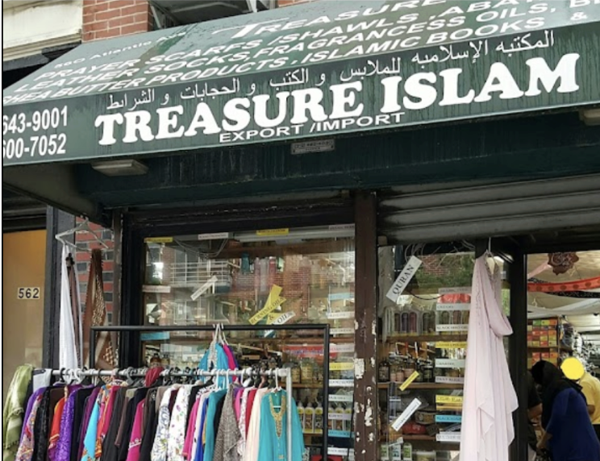
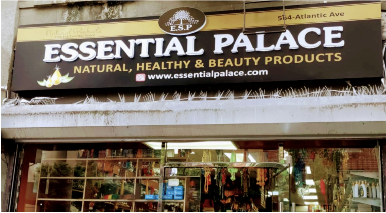
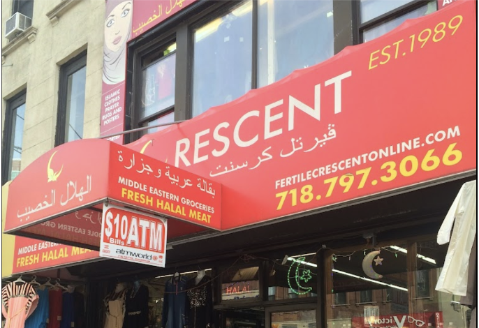
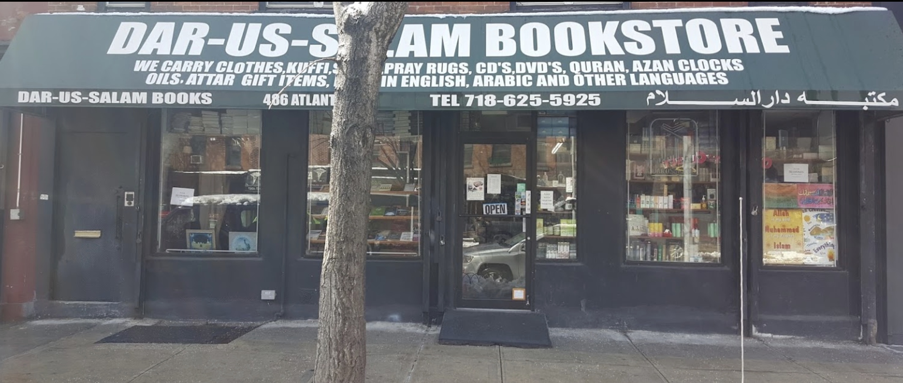
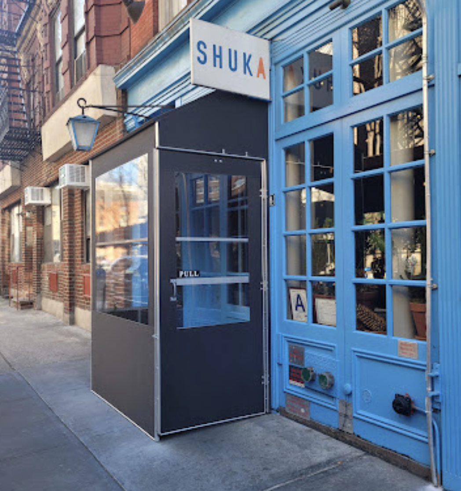
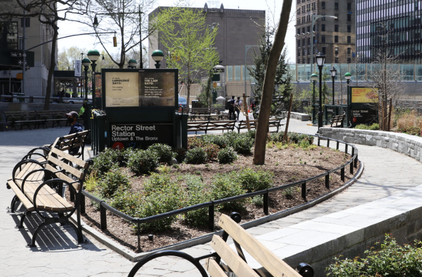

1. Treasure Islam
560 Atlantic Ave, Brooklyn, NY 11217
Open every day 9 AM-8PM

Treasure Islam is a shop that primarily sells Islamic objects like clothes, books, prayer rugs, and other small things like prayer beads, perfumes, etc. I like to go to this store when I’m looking for a particular outfit or clothing item that is culturally specific to the Arab region, or Islamic attire. The clothes in here are arranged in chaotic piles, prices are affordable, so it’s fun to do a deep dig through the store.
2. Madina Industrial Corporation
568 Atlantic Ave, Brooklyn, NY 11217
Open Monday through Saturday 9 AM-7PM, Sunday 10 AM-6PM

One thing that’s a pattern on the street is all the different perfumes you can get. The perfumes that are sold in nearly every other store are primarily scents crafted by the shipowners themselves of dupes of commercial fragrances, while also coming up with some unique scents of their own. This shop is the wholesale retail of these perfume objects. Go here if you’re looking for a unique scent, incense, any scent accessories, or perfume bottles of any size.
3. Essential Palace (ESP)
564 Atlantic Ave, Brooklyn, NY 11217
Open every day 9 AM-9 PM

ESP also known as Essential Palace, is a palace of scents. Go here if you’re in the market for a unique scent oil, incense, body soap, shampoo, toothpaste and more. Prices here are very affordable. I like to go to this spot because the products are pretty healthy, and there’s so many things that everyone can walk out with something that fits right for them.
4. Fertile Crescent
564 Atlantic Ave, Brooklyn, NY 11217
Open every day 9 AM-10 PM

Fertile Crescent is your classic halal/Arab grocery store. They have all of the classics such as Miranda Soda, Coco Prince cookies, Fool Beans, Kiri Cheese, Algerian Dates –it goes on. I go here to make my errands for Arab-specific ingredients and groceries I grew up with. The street has a couple more, but this is the first Arab grocery store on Atlantic Ave.
5. Maktaba Dar-Us-Salam Inc.
486 Atlantic Ave, Brooklyn, NY 11217
Open every day 11:30 AM-7 PM

This is one of my favorite places to get inspiration. As an artist whose practice centers a lot on visual patterns and text, specific to the Arab world, this place is a gold mine for found imagery. The shop is a bit outdated, which can make for an interesting experience for those who are familiar with Islamic library stores. They also sell cassettes, dvd’s, prayer rugs, and holiday cards. If you’re interested in these early 2000s Islamic books, theology, or like bookstores in general, it’s worth coming here to travel to another kind of place in time.
6. Little Morocco
24-39 Steinway St, Queens, NY 11103
Open Wed-Sat, 11:30 AM-11:30 PM, except Fridays are 11 AM- 11:30 PM

This is better than Mogador. Mogador is a more popular Moroccan restaurant, but for most North Africans in New York, we know that Mogador is overrated. Instead, go to local spots like Little Morocco. The first time I went here, I saw a guy that looked like my grandpa cooking in the back, so I knew this palace was good. For just $13 you can get a giant serving of lamb couscous. This place also reminded me of my mom’s cooking. Recommend coming here if you find yourself in Astoria, and are looking to eat more North African rather than Middle Eastern.
7. Shuka
38 MacDougal St, New York, NY, 10012
Open Tue-Fri, 12 PM-4 PM & 5 PM - 11PM and Sat-Sun, 10:30 AM - 3:30 PM & 5 PM - 11PM

Shuka is an example of a Middle Eastern spot if it was in the west village - which it is. It’s on the more expensive side, but it is a good place for a fancier Middle Eastern spot in the city, if that is what you’re looking for.They have a nice outdoor section to sit in during the day. It’s a good place to come with one or many.
8. Elizabeth H. Berger Plaza
2 Edgar St, New York, NY 10006
Open everyday, 6 AM-1 AM

The Elizabeth H.Berger Plaza. It’s a space located in the financial district of New York, that used to be a common meeting place for early Arab immigrants in the city, particularly the Syrian and Lebanese community. The surrounding neighborhood used to be called “Little Syria '' between the 1880s to 1940s, before the community was pushed out and settled in Brooklyn near Atlantic Avenue. The community was filled with essayists, poets, novelists, even forming the first Arab American literary collective: Mahjar. A writer that I like, Khalil Gibran, came out of this neighborhood and surgence of literary culture in this neighborhood.